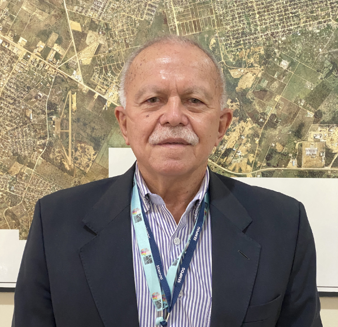
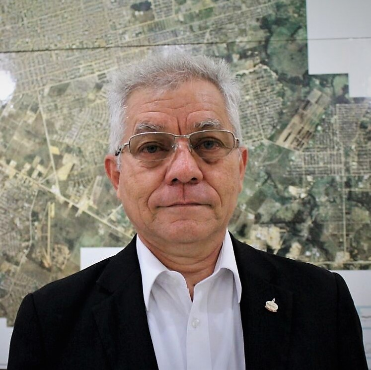
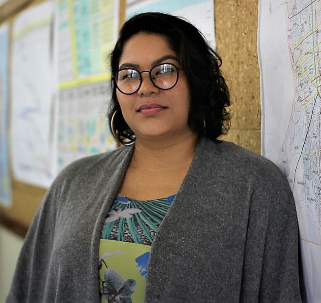
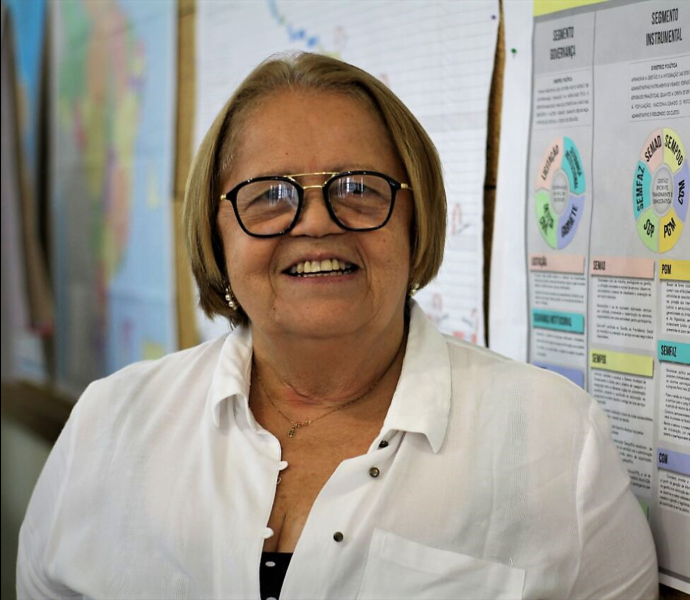
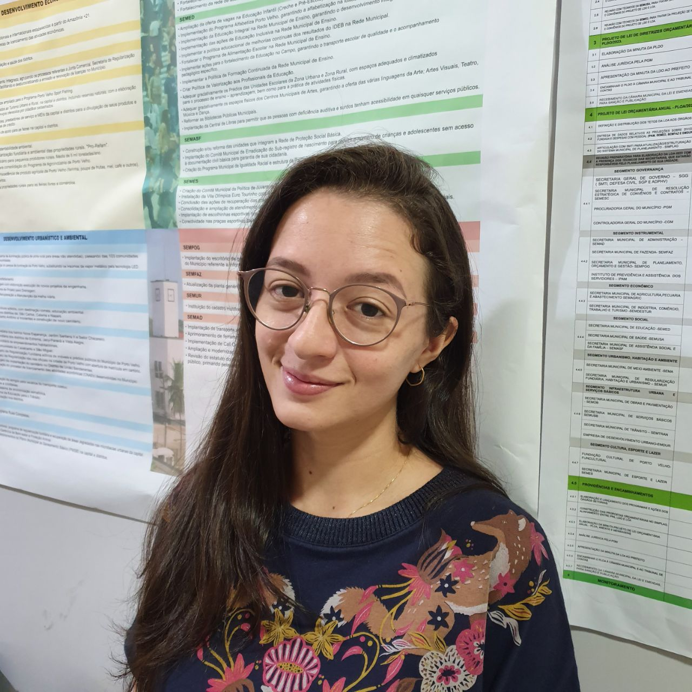

Secretaria Municipal de Planejamento, Orçamento e Gestão -
SEMPOG

Luiz Guilherme Erse da Silva
Secretário Municipal
Dec. nº. 6.174/I de 31/12/2020
Administrador. Especializado em Planejamento, Orçamento
e Finanças. Atuou como Secretário de Fazenda
do município de Porto Velho, Secretario Adjunto de
Planejamento do Estado de Rondônia, Secretário de
Administração do Estado de Rondônia, Secretário geral de
Administração e Planejamento do Estado de
Rondônia, Secretário de Gestão Estratégica da
Presidência do Tribunal de Contas. Coordenador dos
grupos de trabalho de institucionalização e implantação
do IPERON e IPAM.
Secretaria Executiva e Assessoria Técnica - ASTEC/SEMPOG

Wanda Fernandes A.Braga Brandão
Secretária Executiva do Gabinete
Dec. nº. 7.885/I de 08/11/2021
Graduada em Ciências Jurídicas pela FARO -RO,
pós-graduada em Planejamento Estratégico na
gestão pública IFRO-RO e Metodologia do ensino
superior pela UNIR. Atuou juntamente aos
departamentos jurídicos em empresas e órgãos
governamentais com foco em análise,
elaboração e controle de contratos em geral.
Meire D'arc Dantas de Figueiredo
Chefe da Assessoria Técnica
Dec. nº. 9.795/I de 19/12/2022
Graduada em Administração com Habilitação em Análise de
Sistemas.
Graduada em Formação Pedagógica para Formadores de Educação
Profissional, Pós-graduada em Metodologia do Ensino Superior e
em Gerência de Projetos de Tecnologia da Informação. Antes de
compor o quadro da Prefeitura de Porto Velho atuou por 14 anos
no
terceiro setor sendo as últimas atuações na Coordenação de TI
e
Coordenação de infraestrutura.
Subsecretaria de Gestão Institucional - SUGINST/SEMPOG

José Cantídio Pinto
Subsecretário de Gestão Institucional
Dec. n° 8.321/I de 08/03/2022
Coronel da Polícia Militar do Estado de
Rondônia, graduado em Ciências Jurídicas
pela Universidade de Rondônia, lecionou
Introdução ao Estudo do Direito na UNIR,
pós-graduado em Metodologia do Ensino
Superior, atuou como Chefe de Gabinete da
Prefeitura de Ji-Paraná, Assessor Militar e
Diretor Geral da Assembleia Legislativa
ALE/RO. Secretário de Justiça do Governo de
Rondônia, fundador do 4º Batalhão da
Polícia Militar de Rondônia, Comandante
Regional da PM/RO.
Subsecretaria de Gestão Institucional - SUGINST/SEMPOG
Departamento Administrativo - DA
Waldemarina Galvão Lopes
Diretora de Departamento
Dec. nº. 8.323/I de 08/03/2022
Graduada em Administração pela Faculdade de Porto
Velho - RO. Pós - graduada em Gestão de Processos e
desenvolvimento na área de Serviço Social.
Divisão de Apoio Administrativo - DAD
Divisão de Recursos Humanos - DRH

Jaílson Bernardo da Silva
Gerente de Divisão
Dec. nº. 8.326/I de 09/03/2022
Programador de aplicações,
com mais de 20 anos de atuação no
planejamento municipal.
Divisão de Controle e Análise Processual - DCP
Gigliane Abrahim de Moraes Dantas
Gerente de Divisão
Dec. nº. 8.326/I de 09/03/2022
Administradora, formada pelo Centro
Universitário São Lucas e pós - graduada
em Metodologia do Ensino Superior.
Divisão de Material e Patrimônio - DMP
Elma da Silva Ramos
Gerente de Divisão
Dec. nº. 8.402/I de 23/03/2022
Graduada em Gestão Pública, especializando-se em
Gestão do Patrimônio no Serviço Público,
Administração de Almoxarifado e Gestão de Estoque.
Subsecretaria de Orçamento - SUORÇAM/SEMPOG
Letícia Agnes Gonçalves Barros
Subsecretária de Orçamento
Dec. n° 8.321/I de 08/03/2022
Servidora da Prefeitura de Porto Velho, desde 2006,
graduada em Administração pela UNIR, pós-graduada em
MBA e gestão pública, profissional em gestão pública
e responsabilidade fiscal, especializando-se em 2012.
Atuou como chefe de execução orçamentária na SEMED e
SEMPOG, diretora do planejamento orçamentário e
como técnica em acompanhamento de gastos com pessoal.
Subsecretaria de Orçamento - SUORÇAM/SEMPOG
Departamento de Planejamento Orçamentário - DEPO
Rosane da Silva Cruz
Diretora de Departamento
Dec. nº. 8.323/I de 08/03/2022
Graduada em Ciências Contábeis pela Universidade
Federal de Rondônia - UNIR, com especialização em
Gestão Pública Municipal.
Divisão de Elaboração Orçamentária - DEO
Maria Izabel Pereira Ferraz de Brito
Gerente de Divisão
Dec. nº. 8.479/I de 31/03/2022
Graduada em Engenharia Agronômica pela UNIRON,
com especialização em Gestão Pública Municipal.
Divisão de Monitoramento e Avaliação do Planejamento
Orçamentário - DMA
Marcélia Beleza de Souza Rodrigues
Gerente de Divisão
Dec. nº. 8.479/I de 31/03/2022
Graduada em Gestão Pública pelo IFRO,
com especialização em Orçamento no Setor Público.
Subsecretaria de Orçamento - SUORÇAM/SEMPOG
Departamento de Controle e Acompanhamento da Execução do Orçamento - DCAE
Flávio Silva Lima
Diretor de Departamento
Dec. nº. 8.323/I de 08/03/2022
Formado em Ciências Contábeis e pós-graduado em
Licitações e contratos administrativos pelo
Centro Universitário São Lucas.
Divisão de Procedimentos e Ajustes Programáticos de
Orçamento - DPA
Jéssica de Oliveira Lopes
Gerente de Divisão
Dec. nº. 8.398/I de 21/03/2022
Graduada em Ciências Econômicas pela
Universidade Federal de Rondônia - UNIR.
Divisão de Execução Orçamentária - DEX
Ábida Souza Santos Aguiar
Gerente de Divisão
Dec. nº. 8.398/I de 21/03/2022
Graduada em Ciências Contábeis,
com pós-graduação em Auditoria e Perícia Contábil.
Divisão de Acompanhamento de Atividades Orçamentárias
Especiais - DAO
Letícia Santos
Gerente de Divisão
Dec. nº. 8.398/I de 21/03/2022
Graduada em Administração pelo
Centro Universitário São Lucas
de Porto Velho.
Subsecretaria de Orçamento - SUORÇAM/SEMPOG
Departamento de Pesquisas e Projeções de Receitas - DPER
Lucas Fernando Balbinot
Diretor de Departamento
Dec. nº. 8.398/I de 21/03/2022
Formado em Ciências Contábeis e
Gestão pública, pós graduado em
Contabilidade Pública.
Divisão de Estudos e Projeções de Receita Orçamentária -
DEP
Marcos Henrique da Silva
Gerente de Divisão
Dec. nº. 8.398/I de 21/03/2022
Graduado em Administração Pública pela
Faculdade de Porto Velho, pós-graduado
em Gestão Pública Municipal pela UNIR
com experiência ativa em processos
administrativos, análise, pareceres,
relatórios, orçamentos públicos e
licitações (Pregoeiro)..
Divisão de Monitoramento e Avaliação do Planejamento
Orçamentário - DMA
Subsecretaria de Planejamento - SUPLAN/SEMPOG

Raísa Tavares Thomaz
Subsecretária de Orçamento
Dec. n° 8.321/I de 08/03/2022
Arquiteta e urbanista da Prefeitura de Porto
Velho onde já atuou como diretora do Departamento
de Planejamento Institucional e Gestão Estratégica
(2017-2022), chefe da Divisão de Análise de Projetos
(2012-2013) e diretora do Departamento de Gestão
Urbana (2011). Especialista em metodologia e gestão
do ensino superior, master em arquitetura, design e
produção do espaço, neuroarquitetura e paisagismo.
Especializando-se em reabilitação ambiental sustentável
arquitetônica e urbanística, planejamento de cidades e
gestão pública. Professora universitária no curso de
Arquitetura e Urbanismo e presidente do Conselho de
Arquitetura e Urbanismo do estado de Rondônia (2015-2017).
Subsecretaria de Planejamento - SUPLAN/SEMPOG
Departamento de Pesquisa, Estatística e Indicadores - DPEI

Rosália Maria Passos da Silva
Diretora de Departamento
Dec. nº. 8.326/I de 09/03/2022
Graduada em Estatística. Especialista em Planejamento,
Metodologia do Ensino Superior, Planejamento para o
Desenvolvimento Regional, Matemática e Engenharia
Econômica. Mestre em Engenharia de Produção e Doutora
em Administração.
Divisão de Informações, Estatísticas, Indicadores e
Análises - DIE

Ainara Alicia Varjão dos Santos
Gerente de Divisão
Dec. nº. 9.795/I de 19/12/2022
Graduada em Administração pela Fundação Universidade
Federal de Rondônia - UNIR (2018) e registrada no
Conselho Regional de Administração (CRA/RO). Mestra
em Administração pelo Programa de Pós-Graduação
Mestrado em Administração (PPGA) da UNIR, atuando
na linha de pesquisa Estratégia, Gestão e Tecnologia
em Organizações com eixo temático em Estratégia e
Tomada de Decisão. Possui experiência em Marketing
Digital direcionado para Social Media com dois anos
de atuação na área.
Divisão de Articulação Intersetorial e Pesquisa - DAI
José Júnior Silva Lopes
Gerente de Divisão
Dec. nº. 8.326/I de 09/03/2022
Graduando em Sistema de Informação pela
Faculdade UNIRON de Porto Velho.
Especialidade em Designer Gráfico.
Subsecretaria de Planejamento - SUPLAN/SEMPOG
Departamento de Implementação do Plano Diretor - DIPLAD

Fabiana de Oliveira
Diretora de Departamento
Dec. nº. 8.398/I de 21/03/2022
Arquiteta e Urbanista, formada pela Faculdade
UNIRON/RO. Especialista em Planejamento e
Desenho de Cidades pela Faculdade PUC/PR.
Experiência na área da Contrução Civil e em
projetos governamentais como o Programa de
Aceleração de Crescimento - PAC.
Divisão de Monitoramento e Avaliação do Plano Diretor -
DMAP
Camila Fávero Loss Prestes
Gerente de Divisão
Dec nº. 8.402/1 de 23/03/2022
Engenheira Civil, com especialização em
Engenharia de Segurança do Trabalho e Mestrado
em Engenharia Urbana. Atuação como docente em
curso técnico de edificações e curso de graduação
em engenharia civil, como engenheira civil na
Secretaria Municipal de Projetos e Obras Especiais.
Divisão de Acompanhamento de Programas e Projetos
Estratégicos - DAPE
Fabio Kenzo Ono
Gerente de Divisão
Dec. nº. 8.398/I de 21/03/2022
Graduando em Engenharia Civil, com
experiência em Planejamento Institucional
e Gestão Estratégica.
Subsecretaria de Planejamento - SUPLAN/SEMPOG
Departamento de Geoprocessamento - GEO
Filipe Henriques A. G. Baraúna
Diretor de Departamento
Dec nº. 8.402/1 de 23/03/2022
Engenheiro Civil e Analista de Sistemas,
especialista em Estruturas de Concreto
Armado e Fundação. Com atuação na área de
Tecnologia de Informação com ênfase em
Infraestrutura de T.I. e Geoprocessamento.
Divisão de Coleta e Armazenamento de Dados - DCAD
Fernanda Ferreira Alves
Gerente de Divisão
Dec nº. 8.402/I de 23/03/2022
Analista de Sistemas formada pela Faculdade Sapiens,
com experiência de Programação em Python, HTML, CSS,
JavaScript e Desenvolvimento em Cloud, especialista
em Análise de dados e MBA em Big Data e Inteligência
Competitiva e mestranda em Propriedade Intelectual e
Transferência de Tecnologia pelo IFRO.
Divisão de Tratamento e Análise de Dados - DTAD
Rafael Ranconi Bezerra
Gerente de Divisão
Dec nº. 8.402/I de 23/03/2022
Engenheiro Sanitarista e Ambiental, mestrando
em Gestão e Regulação de Recursos Hídricos,
ambos pela UNIR, especialista em Engenharia e
Segurança do Trabalho. Com experiência em Projetos
de Combate a Incêndios, Licenciamento Ambiental e
Geoprocessamento.
Divisão de Articulação Sistêmica Intersetorial - DASI
Marvin Nogueira Batista Farias
Gerente de Divisão
Dec. nº. 8.818/I de 25/05/2022
Engenheiro Florestal, especialista em georreferenciamento
de imóveis rurais, com experiência na área de geociências
com ênfase em sensoriamento remoto e manejo integrado do
fogo.